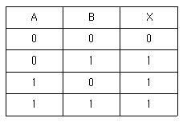
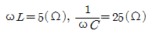
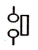
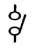
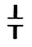
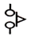

소방설비산업기사(전기) (2015-05-31 기출문제)
1과목: 소방원론
1. 다음 중 화재의 위험성과 관계가 없는 것은?
- 산화성물질
- 자기반응성물질
- 금수성물질
- 불연성물질
(정답률: 92%)

2. 청정소화약제(Clean agent)로 볼 수 없는 것은?
- HFC-23
- HFC-227ea
- IG-541
- CF3Br
(정답률: 72%)
3. 피난계획의 일반원칙 중 페일 세이프(fail safe)에 대한 설명으로 옳은 것은?
- 한 가지 피난기구가 고장이 나도 다른 수단을 이용할 수 있도록 고려하는 것
- 피난설비를 반드시 이동식으로 하는 것
- 본능적 상태에서도 쉽게 식별이 가능하도록 그림이나 색채를 이용하는 것
- 피난수단을 조작이 간편한 원시적인 방법으로 설계하는 것
(정답률: 82%)
4. 물리적 작용에 의한 소화에 해당하지 않는 것은?
- 냉각소화
- 질식소화
- 제거소화
- 억제소화
(정답률: 80%)
5. 햇빛에 방치한 기름걸레가 자연발화를 일으켰다. 다음 중 이 때의 원인에 가장 가까운 것은?
- 광합성 작용
- 산화열 축적
- 흡열반응
- 단열압축
(정답률: 89%)
6. 가연물에 점화원을 가했을 때 연소가 일어나는 최저 온도를 무엇이라고 하는가?
- 인화점
- 발화점
- 연소점
- 자연발화점
(정답률: 79%)
7. 메탄(CH4) 1mol 이 완전 연소되는데 필요한 산소는 몇 mol인가?
- 1
- 2
- 3
- 4
(정답률: 75%)
8. 화상의 종류 중 전기화재에 입은 화상으로서 피부가 탄화되는 현상이 발생하였다면 몇 도 화상인가?
- 1도 화상
- 2도 화상
- 3도 화상
- 4도 화상
(정답률: 73%)
9. 화재 시 고층건물내의 연기 유동 중 굴뚝효과와 관계가 없는 것은?
- 층의 면적
- 건물내외의 온도차
- 화재실의 온도
- 건물의 높이
(정답률: 72%)
10. 촛불(양초)의 연소형태와 가장 관련이 있는 것은?
- 증발연소
- 분해연소
- 표면연소
- 자기연소
(정답률: 82%)
11. 1 BTU는 몇 cal 인가?
- 212
- 252
- 445
- 539
(정답률: 71%)
12. 가연성가스의 연소범위에 대한 설명으로 가장 적합한 것은?
- 가연성가스가 연소되기 위해서 공기 또는 산소와 혼합된 가연성가스의 농도범위로서 하한계 값과 상한계 값을 가진다.
- 가연성가스가 연소 또는 폭발되기 위해서 다른 가연성가스와 혼합되어 일정한 농도를 나타내는 범위를 말한다.
- 가연성가스가 공기중에서 일정한 농도를 형성하여 연소할 수 있도록 한 공기의 농도를 말한다.
- 가연성가스가 공기 또는 산소와 혼합된 가연성가스의 농도범위로서 하한계 값과 상한계 값을 더한 것을 말한다.
(정답률: 79%)
13. Halon 104가 열분해 될 때 발생되는 가스는?
- 포스겐
- 황화수소
- 이산화질소
- 포스핀
(정답률: 77%)
14. 25℃에서 증기압이 100mmHg이고 증기밀도(비중)가 2인 인화성액체의 증기-공기밀도는 약 얼마인가? (단, 전압은 760mmHg로 한다.)
- 1.13
- 2.13
- 3.13
- 4.13
(정답률: 52%)
15. 다음 중 전기 화재에 해당하는 것은?
- A급화재
- B급화재
- C급화재
- D급화재
(정답률: 91%)
16. 전기화재의 발생 원인으로 옳지 않은 것은?
- 누전
- 합선
- 과전류
- 고압전류
(정답률: 85%)
17. 불화단백포소화약제 소화작용의 장점이 아닌 것은?
- 내한용, 초내한용으로 적합하다.
- 포의 유동성이 우수하여 소화속도가 빠르다.
- 유류에 오염이 되지 않으므로 표면하주입식 포방출방식에 적합하다.
- 내화성이 우수하여 대형의 유류저장탱크 시설에 적합하다.
(정답률: 58%)
18. 조리를 하던 중 식용유 화재가 발생하면 신선한 야채를 넣어 소화할 수 있다. 이 때의 소화방법에 해당하는 것은?
- 희석소화
- 냉각소화
- 부촉매소화
- 질식소화
(정답률: 85%)
19. 화재현장에서 18℃의 물을 600kg 방사하여 소화하였더니 모두 250℃의 수증기로 발생되었다. 이 때 소화약제로 작용한 물이 흡수한 총 열량은 얼마인가? (단, 가열된 포화수증기의 비열은 0.6[kcal/kg℃]이다.)
- 42660 kcal
- 426600 kcal
- 42660 cal
- 426600c cal
(정답률: 61%)
20. 식용유 및 지방질유이 화재에 소화력이 가장 높은 분말 소화약제의 주성분은?
- 탄산수소나트륨
- 염화나트륨
- 제1인산암모늄
- 탄산수소칼슘
(정답률: 60%)
2과목: 소방전기회로
21. 직류전동기의 속도제어 종류가 아닌 것은?
- 계자제어
- 전압제어
- 저항제어
- 전류제어
(정답률: 62%)
22. 교류전압계에서 지시되는 값은 어떤 값 인가?
- 최대값
- 평균값
- 실효값
- 순시값
(정답률: 80%)
23. 저압 옥내배선의 준공검사의 조합으로 적당한 것은?
- 절연저항측정, 접지저항측정, 절연내력시험
- 절연저항측정, 온도상승측정, 접지저항측정
- 절연저항측정, 접지저항측정, 도통시험
- 온도상승시험, 접지저항측정, 도통시험
(정답률: 66%)
24. 인가 전압의 변화에 따라서 저항값이 비직선적으로 바뀌는 회로소자는?
- 바리스터
- 서미스터
- 트랜지스터
- 다이오드
(정답률: 49%)
25. 동기 발전기를 병렬 운전하고자 하는 경우 같아야 하는 것은?
- 기전력의 주파수
- 발전기의 색상
- 전류의 위상
- 전류의 크기
(정답률: 68%)
26. 조도는 광원으로부터의 거리와 어떠한 관게가 있는가?
- 거리에 비례한다.
- 거리에 반비례한다.
- 거리의 제곱에 비례한다.
- 거리의 제곱에 반비례한다.
(정답률: 69%)
27. 전원전압을 안전하게 유지하기 위하여 사용되는 다이오드는?
- 보드형다이오드
- 터널다이오드
- 제너다이오드
- 바랙터다이오드
(정답률: 82%)
28. 정현파의 파고율은 얼마인가?
- 1
- √2
- √3
- 2
(정답률: 65%)
29. 다음 진리표의 논리회로는?

- AND
- OR
- NOT
- NAND
(정답률: 74%)
30. 직류전압계와 전류계를 사용하여 부하전압과 전류를 측정하고자 한다. 연결 방법으로 옳은 것은?
- 전압계는 부하와 직렬, 전류계는 부하와 병렬
- 전압계는 부하와 병렬, 전류계는 부하와 직렬
- 전압계, 전류계 모두 부하와 병렬
- 전압계, 전류계 모두 부하와 직렬
(정답률: 86%)
31. 제어요소가 제어대상에 주는 양은?
- 조작량
- 동작신호
- 조작부
- 비교부
(정답률: 84%)
32. 피드백제어에서 반드시 필요한 장치는?
- 입력과 출력을 비교하는 장치
- 응답속도를 좋게 하는 장치
- 안정도를 좋게 하는 장치
- 고속 구동장치
(정답률: 84%)
33. 어떤 도체에 10C의 전하가 이동하여 20J의 일을 하였다면 전압의 크기는 몇 V인가?
- 4
- 2
- 1
- 0.5
(정답률: 75%)
34.

의 L-C 직렬 회로에 전압 220V의 교류를 가할 때 흐르는 전류[A]는?- 1.5
- 7.3
- 11
- 12.5
(정답률: 52%)
35. 변압기 기름의 요구 특성이 아닌 것은?
- 인화점이 높을 것
- 점도가 클 것
- 절연내력이 클 것
- 응고점이 낮을 것
(정답률: 63%)
36. 전압변동률이 10%인 정류회로에서 무부하시 전압이 5V일 때 부하 시 전압은 약 몇 V인가?
- 3.23
- 4.54
- 5.23
- 5.74
(정답률: 54%)
37. 전속이 특징 중 틀린 것은?
- 전속의 단면에는 언제나 전하가 나타난다.
- 전속의 경로는 전기력선의 경로와 일치하지 않는다.
- +Q의 전하가 있을 때 Q개의 전속이 나온다.
- 전속은 양전하에서 나와서 음전하에서 끝난다.
(정답률: 67%)
38. 논리식 Aㆍ(A+B)를 간단히 하면?
- A
- B
- AㆍB
- A+B
(정답률: 77%)
39. 제어요소의 동작 중 연속동작이 아닌 것은?
- P 동작
- PD 동작
- PI 동작
- On-OFF 동작
(정답률: 85%)
40. 다음에서 기계적 접점인 리밋스위치의 a 접점은?




(정답률: 83%)
3과목: 소방관계법규
41. 숙박시설 외의 특정소방대상물로서 강의실, 상담실의 용도로 사용하는 바닥면적이 190m2 일 때 법정수용인원은?
- 80명
- 90명
- 100명
- 110명
(정답률: 63%)
42. 비상방송설비를 설치하여야 하는 특정소방대상물의 기준으로 틀린 것은?
- 지하층의 층수가 3층 이상인 것
- 지하층을 제외한 층수가 11층 이상인 것
- 연면적 3500m2이상인 것
- 건축물 내부에 설치된 차고 또는 주차장으로 바닥면적 200m2 이상인 것
(정답률: 47%)
43. 위험물안전관리법령상 제1류 위험물에 해당하는 것은?
- 황화린
- 질산염류
- 마그네슘
- 알킬알루미늄
(정답률: 74%)
44. 시ㆍ도지사는 이웃하는 다른 시ㆍ도지사와 소방업무에 관하여 상호응원협정을 체결한다. 상호응원협정 체결 시 포함되어야 하는 사항으로 틀린 것은?
- 소요경비의 부담에 관한 사항
- 응원출동 대상지역 및 규모
- 화재의 예방에 관한 사항
- 응원출동 훈련 및 평가
(정답률: 55%)
45. 소화활동설비에 해당하지 않는 것은?
- 제연설비
- 비상콘센트설비
- 연결송수관설비
- 자동화재속보설비
(정답률: 57%)
46. 비상경보설비를 설치하여야 할 특정 소방대상물이 아닌 것은?
- 연면적 400m2 이상이거나 지하층 또는 무창층의 바닥면적이 150m2 이상인 것
- 지하층에 위치한 바닥면적 100m2 인 공연장
- 지하가 중 터널로서 길이가 500m 이상인 것
- 30인 이상의 근로자가 작업하는 옥내 작업장
(정답률: 69%)
47. 소방용품에 해당하지 않는 것은?
- 방염액
- 완강기
- 가스누설경보기
- 경보시설 중 음량조절장치
(정답률: 55%)
48. 소방시설관리업의 보조 기술인력으로 등록할 수 없는 자는?
- 소방설비기사
- 소방안전관리자
- 소방설비산업기사
- 소방공무원 3년 이상 근무 경력자로 소방시설 인정자격 수첩을 교부 받은 자
(정답률: 69%)
49. 위험물의 저장 또는 취급에 관한 세부기준을 위반한 자에 대한 과태료 금액으로 옳은 것은?(오류 신고가 접수된 문제입니다. 반드시 정답과 해설을 확인하시기 바랍니다.)
- 1차 위반 시 : 50만원
- 2차 위반 시 : 70만원
- 3차 위반 시 : 100만원
- 4차 위반 시 : 150만원
(정답률: 71%)
50. 소방용수시설의 저수조는 지면으로부터 낙차가 몇 m 이하로 설치하여야 하는가?
- 0.5
- 1.7
- 4.5
- 5.5
(정답률: 77%)
51. 소방안전관리대상물의 관계인이 소방안전관리자를 선임한 경우에는 선임한 날부터 며칠 이내에 누구에게 신고해야 하는가?
- 7일, 시ㆍ도지사
- 14일, 시ㆍ도지사
- 7일, 소방본부장이나 소방서장
- 14일, 소방본부장이나 소방서장
(정답률: 60%)
52. 소방시설의 하자보수 보증기간이 3년인 것은?
- 피난기구
- 옥내소화전설비
- 무선통신보조설비
- 비상방송설비
(정답률: 70%)
53. 소방서장의소방대상물 개수ㆍ이전ㆍ제거 등의 명령에 따른 손실보상 의무자는?
- 국무총리
- 시ㆍ도지사
- 소방서장
- 구청장
(정답률: 83%)
54. 방염성능기준 이상의 실내장식물 등을 설치하여야 하는 특정소방대상물이 아닌 것은?
- 방송국
- 종합병원
- 11층 이상의 아파트
- 숙박이 가능한 수련시설
(정답률: 73%)
55. 소방장비 등에 대한 국고보조 대상사업의 범위와 기준보조율은 무엇으로 정하는가?
- 총리령
- 대통령령
- 국민안전처령
- 시ㆍ도의 조례
(정답률: 69%)
56. 종합정밀점검을 실시하여야 하는 아파트의 기준으로 옳은 것은?(관련 규정 개정전 문제로 여기서는 기존 정답인 3번을 누르면 정답 처리됩니다. 자세한 내용은 해설을 참고하세요.)
- 연면적 2000m2 이상이고 11층 이상일 것
- 연면적 2000m2 이상이고 16층 이상일 것
- 연면적 5000m2 이상이고 11층 이상일 것
- 연면적 5000m2 이상이고 16층 이상일 것
(정답률: 63%)
57. 소방용수시설의 저수조 설치기준으로 틀린 것은?
- 흡수에 지장이 없도록 토사 및 쓰레기 등을 제거할 수 있는 설비를 갖출 것
- 흡수부분의 수심이 0.5m 이상일 것
- 흡수관의 투입구가 사각형의 경우에는 한변의 길이가 60cm 이상일 것
- 저수조에 물을 공급하는 방법은 상수도에 연결하여 수동으로 급수되는 구조일 것
(정답률: 77%)
58. 위험물 중 기어유, 실린더유, 그 밖에 1기압에서 인화점이 200℃ 이상 250℃미만의 인화성 액체는 어디에 해당되는가?
- 제1석유류
- 제2석유류
- 제3석유류
- 제4석유류
(정답률: 59%)
59. 소방기본법에 의한 한국소방안전협의회의 업무감독권한은 누구에게 있는가?(관련규정 개정전 문제로 여기서는 기존 정답인 2번을 누르면 정답 처리 됩니다. 자세한 내용은 해설을 참고하세요.)
- 시ㆍ도지사
- 국민안전처장관
- 소방본부장
- 관할 소방서장
(정답률: 74%)
60. 소방본부장 또는 소방서장이 소방특별조사를 하고하 하는 때에는 관계인에게 며칠 전에 서면으로 알려야 하는가?
- 1일
- 3일
- 5일
- 7일
(정답률: 77%)
4과목: 소방전기시설의 구조 및 원리
61. 5층의 노유자시설에 적응성이 없는 피난기구는?(관련 규정 개정전 문제로 여기서는 기존 정답인 4번을 누르면 정답 처리됩니다. 자세한 내용은 해설을 참고하세요.)
- 피난교
- 구조대
- 피난용트랩
- 미끄럼대
(정답률: 67%)
62. 소화설비 중에서 화재감지기의 설치를 교차회로방식으로 적용하는 설비가 아닌 것은?
- CO2 소화설비
- 분말 소화설비
- 할로겐화합물 소화설비
- 습식스프링클러설비
(정답률: 65%)
63. 비상콘센트용의 풀박스 등은 방청도장을 한 것으로서, 두께 몇 mm 이상의 철판으로 해야 하는가?
- 1.6
- 1.7
- 1.8
- 1.9
(정답률: 84%)
64. 중계기의 시험항목으로 틀린 것은?
- 주위온도시험
- 비화재의 방지시험
- 절연저항시험
- 충격전압시험
(정답률: 62%)
65. 연면적이 3500m2이고, 지하 3층, 지상 6층인 소방대상물에 있어서 건물의 지하 2층에서 화재가 발생하였을 경우 비상방송설비가 우선적으로 경보를 발하도록 하여야 하는 층에 속하지 않는 것은?
- 지상 1층
- 지하 1층
- 지하 2층
- 지하 3층
(정답률: 76%)
66. 무선통신보조설비에 증폭기를 설치할 경우 설치기준으로 틀린 것은?
- 증폭기는 비상전원이 부착된 것으로 한다.
- 증폭기는 주회로의 전원이 정상여부를 표시하는 표시등과 전압계를 설치한다.
- 전원은 교류전압 옥내간선으로 한다.
- 비상전원 용량은 무선통신보조설비를 20분 이상 작동시킬 수 있는 것으로 한다.
(정답률: 77%)
67. 유도등의 외함을 방염성능이 있는 합성수지로 사용하는 경우 몇 ℃의 온도에서 열로 인한 변형이 생기지 않아야 하는가?
- 60±2℃
- 70±2℃
- 75±2℃
- 80±2℃
(정답률: 65%)
68. 공기관식 차동식분포형 감지기에서 공기관 상호간의 거리는 몇 m 이하가 되도록 해야 하는가? (단, 주요구조부를 내화구조로 한 특정소방대상물)
- 3
- 6
- 9
- 10
(정답률: 48%)
69. 무선통신보조설비를 구성하는 기기에 해당하지 않는 것은?
- 혼합기
- 중계기
- 분파기
- 분배기
(정답률: 69%)
70. 2급 누전경보기를 설치할 수 있는 경계전로로 옳은 것은?
- 60A 초과 전로
- 60A 이하 전로
- 60A 이상 전로
- 모든 전로에 사용할 수 있다.
(정답률: 76%)
71. 휴대용비상조명등의 충전식 밧데리의 용량은 몇 분 이상 유효하게 사용할 수 있는 것으로 하여야 하는가?
- 10
- 20
- 30
- 60
(정답률: 60%)
72. 노유자시설에 설치하여야 할 유도등 및 유도표지로 옳게 짝지어진 것은?
- 소형피난유도등 - 통로유도등
- 대형피난유도등 - 객석유도등
- 중형피난유도등 - 소형피난유도등
- 피난구유도표지 - 통로유도표지
(정답률: 47%)
73. 누전경보기의 전언은 분전반으로부터 전용회로로 하고 각 극에 개폐기 및 과류차단기를 설치하여야 한다. 과전류 차단기의 전류는 몇 A 이하의 것으로 하여야 하는가?
- 15
- 20
- 30
- 50
(정답률: 79%)
74. 감지기 음향장치는 정격전압의 몇 %인 전압에서 음향을 발해야 하는가?
- 60
- 70
- 80
- 90
(정답률: 85%)
75. 비상방송설비의 설치방법으로 틀린 것은?
- 음량조절기를 설치하고, 그 배선은 4선식으로 하였다.
- 확성기의 음성입력은 3W로 하였다.
- 높이 1.2m의 위치에 조작부 조작스위치를 설치하였다.
- 기동장치에 의한 화재 수신 후 방송이 개시될때 까지의 소요시간을 5초로 하였다.
(정답률: 81%)
76. 비상방송설비에 설치하여야 하는 축전지의 용량은?
- 비상방송설비에 대한 감시 상태를 60분간 지속한 후 유효하게 10분 이상 경보할 수 있는 용량
- 비상방송설비에 대한 감시 상태를 60분간 지속한 후 유효하게 20분 이상 경보할 수 있는 용량
- 비상방송설비에 대한 감시 상태를 80분간 지속한 후 유효하게 10분 이상 경보할 수 있는 용량
- 비상방송설비에 대한 감시 상태를 80분간 지속한 후 유효하게 20분 이상 경보할 수 있는 용량
(정답률: 73%)
77. 경계전로의 누설전류를 자동적으로 검출하여 이를 누전경보기의 수신부에 송신하는 것은?
- 중계기
- 송신기
- 발신기
- 변류기
(정답률: 65%)
78. 각 실마다 설치하되, 바닥면적이 150m2를 초과하는 경우에는 150m2마다 1개 이상 설치하여야 하는 감지기는?
- 불꽃감지기
- 이온화식감지기 제3종
- 아날로그방식감지기
- 단독경보형감지기
(정답률: 78%)
79. 비상콘센트설비는 하나의 전용회로에 설치하는 비상콘센트의 수가 몇 개 이하로 설치되어야 하는가?
- 5
- 10
- 15
- 20
(정답률: 78%)
80. 자동화재속보설비 속보기의 전압 변동시 정상적인 기능을 발휘하여야 하는 사용전압 범위는?
- 정격전압의 80% 및 120%
- 정격전압의 85% 및 115%
- 정격전압의 90% 및 110%
- 정격전압의 95% 및 1⑤%
(정답률: 82%)